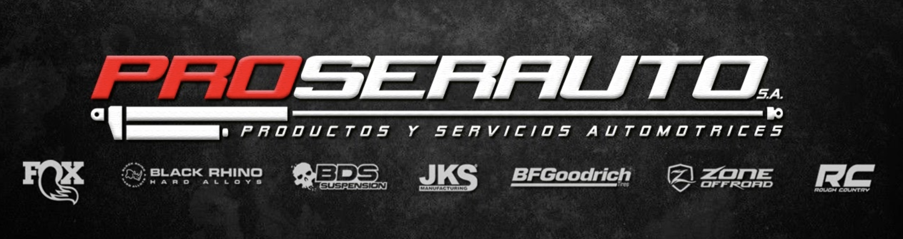

Proserauto S.A. · Automotive · Ecuador · 2020–2022
Diversified a company's revenue streams during COVID-19, grew revenue by 150% in 6 months, and achieved 1,300% ROI on paid campaigns as the sole marketer with a lean budget.
Proserauto was a high-performance equipment company for 4x4 vehicles with a single location, two sales representatives, and an average monthly revenue of ~$100,000. When the COVID-19 pandemic hit in 2020, demand for high-performance equipment dropped sharply and the company had no recurring revenue stream, low digital presence, and no CRM to fall back on. As the sole marketer, I was responsible for finding a way to keep the business alive and growing during mandatory curfews and a collapsed primary market.

Marketing Manager; sole marketer with full ownership of strategy, execution, budget, and a direct line to the owner.